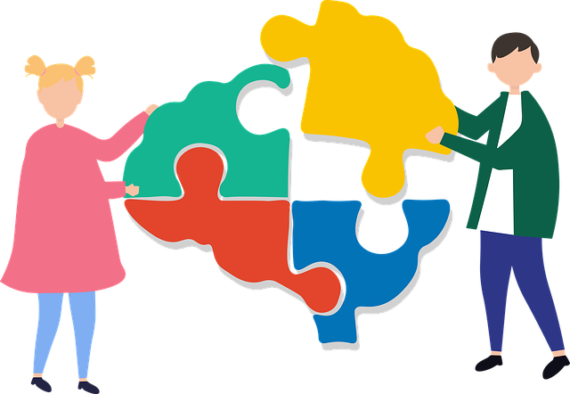
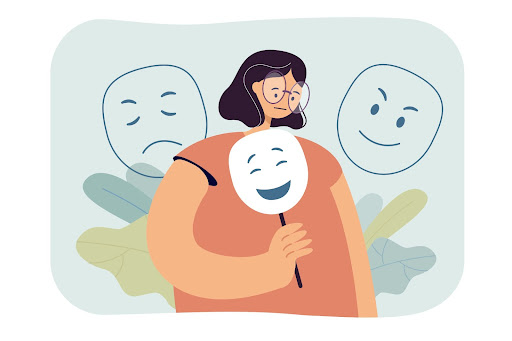

Desmistificando o Autismo Feminino: Explorando Mitos e Verdades
Este artigo explora os mitos e equívocos comuns sobre o autismo em mulheres.

As Diferenças no Autismo Masculino e Feminino
Algumas diferenças importantes que podem ser negligenciadas.

Os Desafios do Diagnóstico Tardio em Mulheres Autistas
Por que as mulheres muitas vezes são diagnosticadas tardiamente e como isso afeta sua jornada e acesso aos serviços de apoio.
Autismo e Saúde Mental em Mulheres
A interseção entre o autismo e questões de saúde mental específicas que afetam as mulheres, como ansiedade, depressão e distúrbios alimentares.
Autismo e Identidade de Gênero em Mulheres
Como o autismo pode influenciar a identidade de gênero em mulheres e as experiências únicas que elas enfrentam na comunidade LGBTQ+.
Suporte e Recursos para Mulheres Autistas
Organizações, grupos de apoio e recursos online disponíveis especificamente para mulheres autistas, oferecendo sugestões práticas para buscar ajuda e comunidade.